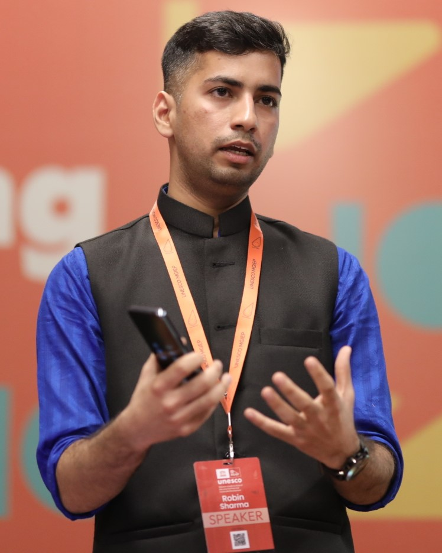

Robin Sharma

What makes a digital learning environment (DLE) effective? How do we design and use meaningful learning technologies?
I am a creator of science-based DLEs. I also study the effects of such DLEs on academic achievement, attitudes, and acceptance. I have more than eight years of professional experience in EdTech at international non-profit, the video game industry, and academia.
Learning Environments, Game-based Learning, User Experience, Human Computer Interaction (HCI), Mathematics Education, Experimental Design, Learning Analytics
- Applied educational theories to analyze students’ interactions as they solve mathematical problems in a Digital Learning Environment (DLE).
- Designed theory and research-driven games to build mathematical thinking in children.
- Created research and data-driven frameworks, rubrics, and learning paths for analyzing children's progress as they interact with math games/apps.
- Analyzed national curriculum frameworks of 6 countries/regions to map learning outcomes in DLEs.
- Designed and created the world’s first, interactive curriculum guides for 3 educational video games. Guides published in English and French, available openly for all teachers.
- Conducted 3 international workshops with 45 teachers and 25 students on use of educational games (Canada, the UK, and India).
- Collaborated with web designers and production teams to create the website and promotional materials for the curriculum guides.
- Led a team of researchers to design and conduct an experimental study with 100 teachers to evaluate the effects of user experience (UX) and preferences towards learning technologies.
- Conducted a systematic review of literature synthesizing findings from 101 scientific articles to identify effective ways of math instruction.
- Conducted an experimental study with 112 adolescents to evaluate the effects of DLEs in the Global South. Study supported by International Development Research Centre (IDRC) and Fonds de recherche du Québec – Société et Culture (FRQSC).
- Secured over 180,000 CAD via 2 fellowships, 8 awards, and 4 grants to study effects of digital learning environments.
- Presented at 10 conferences and published 12 peer-reviewed articles and chapters in top journals.
- Thesis: "Designing and Testing the Effectiveness of Digital Games to Develop Adolescents’ Understanding of Mathematics", supervised by Dr. Adam Dubé.
- Led and created UNESCO’s first “Industry Guidelines on Digital Learning”, launched by the Indian and Finnish Ministers of Education at the 40th Session of UNESCO General Conference in Paris, 2019.
- Created UNESCO’s first game-based curriculum toolkit in collaboration with teams of developers, economists, and policymakers from the Asia Pacific region.
- Led the creation of 5 MOOCs aligned with UNESCO’s framework for Education for Sustainable Development (ESD). MOOC titled “Decision Making towards Sustainability” was a finalist at the 7th Educational Games Competition, Denmark, 2019.
- Established partnership and secured multi-year funding from Samsung to support research aimed at improving learning outcomes in rural India. Project titled "MyDream" later implemented in collaboration with the Navodaya Vidyalaya Samiti.
- Collaborated with local governments and ministries, academia, and industry to organize 20+ workshops for 1000+ teachers and students from Asia Pacific.
- Evaluated 50+ proposals, financial statements, and presentations for UNESCO MGIEPs programs and conferences.
- Analyzed the National Achievement Survey conducted by the National Council of Educational Research and Training (NCERT), India.
- Analyzed scientific literature and reports to inform the institutional framework for “setting up campuses of foreign universities in India”.
- Co-founded MATRIX, the Mathematics Education Society of the University of Delhi.
- Organized bi-annual math fests and events for school students, university students, and teachers.
- Organized several workshops, panels, and games to promote mathematics and its applications.
- Awarded the University Gold Medal for leading academic performance in the program.
- Thesis: "A Study on Efficacy of Hands-on Approach on Understanding of Linear Algebra among Undergraduate Students", supervised by Dr. Jyoti Sharma.
- Took courses in Algebra, Analysis, Probablity, Calculus and everything math. Loved them all.
I am available to consult on projects in educational research, teacher training, mathematics education, and EdTech design and development. Please reach out at: robin.sharma@mail.mcgill.ca.